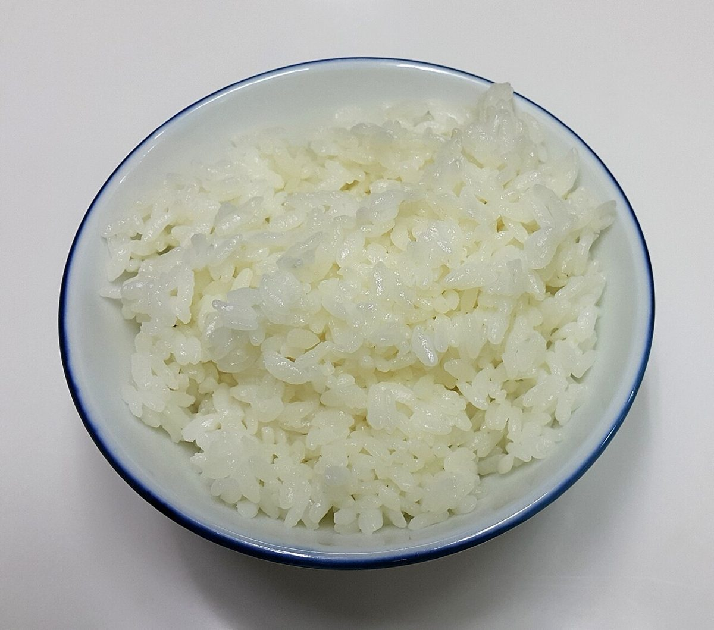
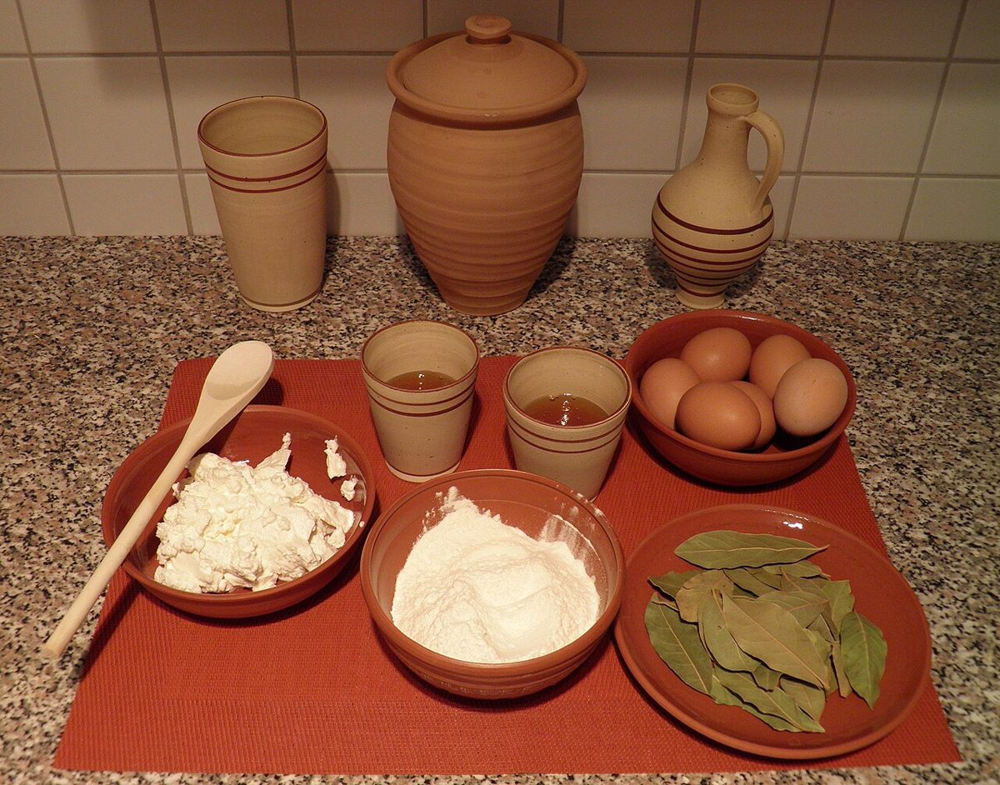
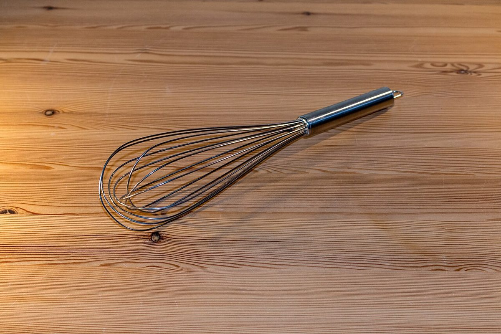

お店について
看板の紹介
お米パン: お米を使ったパンの看板です。
米粉スイーツ: 米粉を使ったスイーツの看板です。
奈良県生駒市東生駒で、このふたつの看板を掲げています。
「あいも」という名前
店名の由来は、店主様にご確認のうえ掲載予定です(準備中)。
店主・スタッフ
準備中(お問い合わせください)




制作側からのコンセプト案
お米を主役に、毎日に寄り添う小さなパンとお菓子の店。
※これは制作側の案であり、お店の公式な理念ではありません。
基本情報
- 店名
- お米パン 米粉スイーツ あいも
- 住所
- 〒630-0213 奈良県生駒市東生駒2丁目207-371
- @aimoikoma
- 営業時間
- 準備中(お問い合わせください)
- 定休日
- 準備中(お問い合わせください)